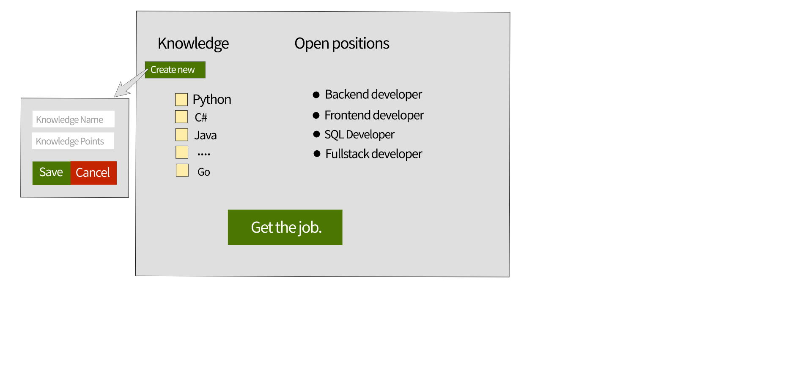

Create a form that holds a list of predefined programming languages (A list of checkboxes) and a list of
current open positions (A list of radio buttons).
Each knowledge has an score
- Python: 5 points.
- C#: 5 points
- Java: 5 points
- PHP: 4 points
- HTML: 3 points
- CSS: 2 points
- Javascript: 3 points
- Angular: 4 points
- React: 4 points
- SQL: 3 points
- Go: 4 points
Each open position has a minimum score
- SQL Developer: 3 points
- Backend developer: 8 points
- Frontend developer: 8 points
- Fullstack developer: 13 points
If a user wants to create another programming language can click on a button "Create new" (Which should be
besides or before of the knowledge section).
-
This button should show slowly a form with two inputs, One input to type the name of the knowledge to be created and one input to assign the points it has. Both of them should be required.The knowledge name should be with more than 3 characters and the points should be between 1 and 10.
-
Also should display a button to 'save' those values. When this button is clicked the application should create a new checkbox in the knowledge list.
Make sure you have validated all the fields before you add the new item to the list. If there is any invalid value report them with a nice alert.
-
Another button will be available to cancel the knowledge creation which will hide slowly this form shown.
Create a button with the text "Get the job" to allow the users to validate if their knowledge is enouhg to an specific open position.
When this button is clicked the application need to do the following algorithm:
- Compute the amount of points that the user has
- Identify the position that the user is applying to
- Evaluate if the user is allowed to apply to the selected position.
-
If the user doesn't get all the required points to apply show a nice alert notifying "The user does not meet the
expected requirements"
-
If the user has the expected points or more show a nice alert notifying "You have all the expected requirements. The position is yours !! Good job."
